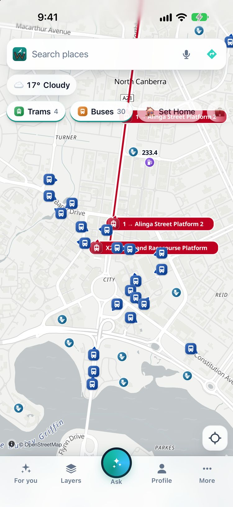

Wayaroo shows the buses and the light rail of Canberra moving on the map, from Transport Canberra's open live feed. Tap one to see its route, where it is going and its next stops.
Open the live map of CanberraGet the iPhone app
Free. No account. It opens in your browser.

On Friday 13 November 2026 at 9:00 am (Melbourne time), Wayaroo showed 195 vehicles in Canberra: 184 buses and 11 light rail vehicles.
| Live on the map | Vehicles at that time |
|---|---|
| Buses | 184 |
| Light rail vehicles | 11 |
The numbers change through the day. Source: Transport Canberra (open GTFS and GTFS-Realtime feeds).
In the ACT, Wayaroo plans the trip by car, bike or on foot, and shows the live vehicles and the next departures at each stop. Trip plans by public transport are in Victoria and New South Wales only, for now.
Yes. Wayaroo shows Canberra's buses and light rail moving on one map. It is free and needs no account.
Yes. Open the For you tab to see your nearest stops with the next departures.
From Transport Canberra's open live feed. Wayaroo is independent and Transport Canberra does not endorse it. Always check the sign at the stop.
Yes. Wayaroo is free and needs no account. Your settings stay on your phone.
Other cities: Melbourne · Sydney · Brisbane · Gold Coast · Adelaide · Cairns · all cities
Wayaroo is an independent app from Ozrsym Pty Ltd. Transport Canberra does not run or endorse it. Live positions and times come from the operator's feed. They can be late or wrong. Always check the sign at the stop. Full list of sources: data credits.